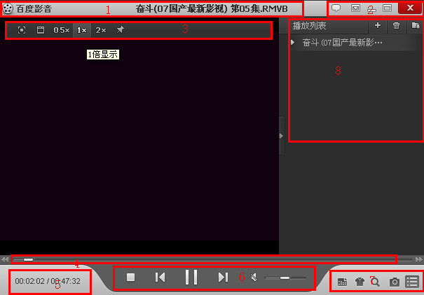
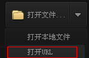
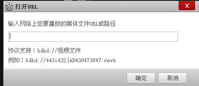
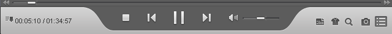
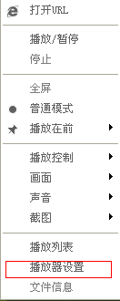
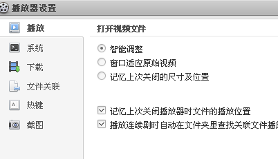

1：标题区：显示正在播放的文件的文件名。
2：系统按钮区：包括关闭、最大化/还原、最小化和主菜单按钮。
3：浮动控制栏：包括模式切换、视频大小切换等按钮。
4：播放定位滑杆：拖动此滑杆可以定位到影片的任何位置
5：时间状态显示区域：显示当前播放时间和影片总长
6：主控制按钮区域：包括播放/暂停、停止、上一个文件、下一个文件、音量控制等最常用的功能按钮。
7：辅助功能区域：包括打开文件、改变外观、播放列表等按钮。
8：播放列表：管理播放列表
1）打开本地文件
通过在资源管理器中双击已经关联百度影音的文件，就可以用百度影音打开该媒体文件。或者在打开百度影音后，在百度影音主界面点击【
】打开相应的媒体文件。
2）在线播放文件
首页点击打开文件右侧 ，接着点击，接着会弹出

输入相应的url地址，点击确定即可在线播放。
打开媒体文件后开始播放，在播放的过程中，您可以通过“主控制按钮区域”的按钮进行暂停、停止、调节音量等常用的操作。在“时间状态显示区域”看到当前播放时间和影片总长，通过“播放定位滑杆”快速定位影片等。

百度影音提供了普通窗口模式、全屏模式和0.5画面模式、2倍画面模式来满足用户的不同需求。普通窗口模式是在播放过程中保持窗口，您可以方便的进行各种操作。全屏模式是在播放过程中，影片铺满显示器，在移动鼠标时会出现底部和顶部的控制栏。您可以在播放的过程中通过“浮动控制栏”轻松切换各种模式，也可以通过菜单或热键来进行切换。
播放列表帮助用户一次性的管理一系列的电影或歌曲。点击主界面右下角的 按钮可以显示或隐藏播放列表，拖动播放列表左边的边框可以改变播放列表的宽度；点击播放列表上部的按钮 可以改变播放列表的显示模式、增加删除文件以及对播放列表中的文件进行排序等
百度影音的功能都会在菜单中有体现，百度影音的菜单包括主菜单、主窗口的右键菜单和播放列表的右键菜单等。点击右上角的按钮会弹出主菜单，在主窗口和播放列表点击鼠标右键会弹出相应的右键菜单
热键是指通过按键盘的某个键来完成某项功能，例如通过按回车切换全屏、通过上下箭头键调节音量等。百度影音对常用的功能都设置了热键，您也可以在参数设置面板里自己设置喜欢的热键。百度影音默认的热键列表如下所示：
| 功能 | 热键 | 功能 | 热键 |
| 打开文件 | Ctrl + O | 打开URL | Ctrl + U |
| 全屏切换 | 回车 | 播放/暂停 | 空格 |
| 上一个文件 | PgUp | 下一个文件 | PgDn |
| 快进 | → | 快退 | ← |
| 降低音量 | ↑ | 升高音量 | ↓ |
| 静音 | M | 播放列表 | F3 |
| 播放器设置 | F5 |
安装百度影音后，视音频文件会被关联到百度影音，这样双击文件就会用百度影音打开。您可以在参数设置面板里改变文件关联。
点击右键菜单的播放器设置可以弹出控制面板，控制面板提供了一系列对当前正在播放的影片进行控制和调节的功能、热键的设置